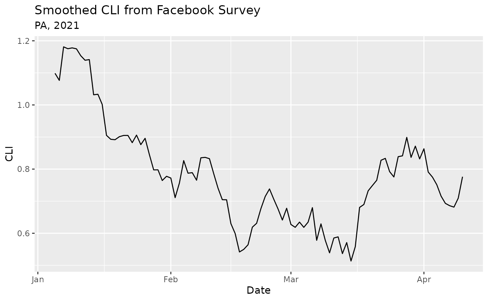

The epidatr package provides access to all the endpoints of the Delphi Epidata API, and can be used to make requests for specific signals on specific dates and in selected geographic regions.
We recommend you register for an API key. While most endpoints are
available without one, there are limits
on API usage for anonymous users, including a rate limit. See
save_api_key() for details on how to obtain an API key and
set this package to use it.
Basic Usage
Fetching some data from the Delphi Epidata API is simple. Suppose we
are interested in the covidcast
endpoint, which provides access to a range of data on COVID-19.
Reviewing the endpoint documentation, we see that we need to specify a
data source name, a signal name, a geographic level, a time resolution,
and the location and times of interest.
In this case, the pub_covidcast() function lets us
specify these parameters for the endpoint and returns a tibble with the
results:
epidata <- pub_covidcast(
"fb-survey", "smoothed_cli", "state", "day", "pa",
epirange(20210105, 20210410)
)
epidata
#> # A tibble: 96 × 15
#> geo_value signal source geo_type time_type time_value direction issue
#> <chr> <chr> <chr> <fct> <fct> <date> <dbl> <date>
#> 1 pa smoothed_… fb-su… state day 2021-01-05 NA 2021-01-10
#> 2 pa smoothed_… fb-su… state day 2021-01-06 NA 2021-01-29
#> 3 pa smoothed_… fb-su… state day 2021-01-07 NA 2021-01-29
#> 4 pa smoothed_… fb-su… state day 2021-01-08 NA 2021-01-29
#> # ℹ 92 more rows
#> # ℹ 7 more variables: lag <int>, missing_value <int>, missing_stderr <int>,
#> # missing_sample_size <int>, value <dbl>, stderr <dbl>, sample_size <dbl>We can then easily plot the data using ggplot2:
library(ggplot2)
ggplot(epidata, aes(x = time_value, y = value)) +
geom_line() +
labs(
title = "Smoothed CLI from Facebook Survey",
subtitle = "PA, 2021",
x = "Date",
y = "CLI"
)
The Delphi
Epidata API documentation has more information on the available
endpoints and arguments. You can also use the
avail_endpoints() function to get a table of endpoint
functions:
avail_endpoints()
#> ℹ Data is available for the US only, unless otherwise specified
#> # A tibble: 28 × 2
#> Endpoint Description
#> <chr> <chr>
#> 1 pub_covid_hosp_facility() COVID hospitalizations by facility
#> 2 pub_covid_hosp_facility_lookup() Helper for finding COVID hospitalization f…
#> 3 pub_covid_hosp_state_timeseries() COVID hospitalizations by state
#> 4 pub_covidcast() Various COVID and flu signals via the COVI…
#> 5 pub_covidcast_meta() Metadata for the COVIDcast endpoint
#> 6 pub_delphi() Delphi's ILINet outpatient doctor visits f…
#> 7 pub_dengue_nowcast() Delphi's PAHO dengue nowcasts (North and S…
#> 8 pub_ecdc_ili() ECDC ILI incidence (Europe)
#> 9 pub_flusurv() CDC FluSurv flu hospitalizations
#> 10 pub_fluview() CDC FluView ILINet outpatient doctor visits
#> 11 pub_fluview_clinical() CDC FluView flu tests from clinical labs
#> 12 pub_fluview_meta() Metadata for the FluView endpoint
#> 13 pub_gft() Google Flu Trends flu search volume
#> 14 pub_kcdc_ili() KCDC ILI incidence (Korea)
#> 15 pub_meta() Metadata for the Delphi Epidata API
#> 16 pub_nidss_dengue() NIDSS dengue cases (Taiwan)
#> 17 pub_nidss_flu() NIDSS flu doctor visits (Taiwan)
#> 18 pub_nowcast() Delphi's ILI Nearby nowcasts
#> 19 pub_paho_dengue() PAHO dengue data (North and South America)
#> 20 pub_wiki() Wikipedia webpage counts by article
#> 21 pvt_cdc() CDC total and by topic webpage visits
#> 22 pvt_dengue_sensors() PAHO dengue digital surveillance sensors (…
#> 23 pvt_ght() Google Health Trends health topics search …
#> 24 pvt_meta_norostat() Metadata for the NoroSTAT endpoint
#> 25 pvt_norostat() CDC NoroSTAT norovirus outbreaks
#> 26 pvt_quidel() Quidel COVID-19 and influenza testing data
#> 27 pvt_sensors() Influenza and dengue digital surveillance …
#> 28 pvt_twitter() HealthTweets total and influenza-related t…Example queries with all the endpoint functions available in this package are given below.
Advanced Usage (Experimental)
The COVIDcast
endpoint of the Epidata API contains many separate data sources and
signals. It can be difficult to find the name of the signal you’re
looking for, so you can use covidcast_epidata() to get help
with finding sources and functions without leaving R.
The covidcast_epidata() function fetches a list of all
signals, and returns an object containing fields for every signal:
epidata <- covidcast_epidata()
epidata$signals
#> # A tibble: 443 × 3
#> source signal short_description
#> <chr> <chr> <chr>
#> 1 chng smoothed_outpatient_cli Estimated percentage of outpatient docto…
#> 2 chng smoothed_adj_outpatient_cli Estimated percentage of outpatient docto…
#> 3 chng smoothed_outpatient_covid COVID-Confirmed Doctor Visits
#> 4 chng smoothed_adj_outpatient_covid COVID-Confirmed Doctor Visits
#> # ℹ 439 more rowsIf you use an editor that supports tab completion, such as RStudio,
type epidata$signals$ and wait for the tab completion
popup. You will be able to type the name of signals and have the
autocomplete feature select them from the list for you. Note that some
signal names have dashes in them, so to access them we rely on the
backtick operator:
epidata$signals$`fb-survey:smoothed_cli`
#> [1] "COVID-Like Symptoms (Unweighted 7-day average)"
#> [1] "fb-survey:smoothed_cli"
#> [1] "Estimated percentage of people with COVID-like illness "These objects can be used directly to fetch data, without requiring
us to use the pub_covidcast() function. Simply use the
$call attribute of the object:
epidata$signals$`fb-survey:smoothed_cli`$call("state", "pa", epirange(20210405, 20210410))
#> # A tibble: 6 × 15
#> geo_value signal source geo_type time_type time_value direction issue
#> <chr> <chr> <chr> <fct> <fct> <date> <dbl> <date>
#> 1 pa smoothed_… fb-su… state day 2021-04-05 NA 2021-04-10
#> 2 pa smoothed_… fb-su… state day 2021-04-06 NA 2021-04-11
#> 3 pa smoothed_… fb-su… state day 2021-04-07 NA 2021-04-12
#> 4 pa smoothed_… fb-su… state day 2021-04-08 NA 2021-04-13
#> # ℹ 2 more rows
#> # ℹ 7 more variables: lag <int>, missing_value <int>, missing_stderr <int>,
#> # missing_sample_size <int>, value <dbl>, stderr <dbl>, sample_size <dbl>Advanced Usage (Debugging)
We can obtain the [epidata_call] object underlying a
request by setting the dry_run argument to
TRUE in fetch_args_list():
pub_covidcast(
"fb-survey", "smoothed_cli", "state", "day", "pa",
epirange(20210405, 20210410),
fetch_args = fetch_args_list(dry_run = TRUE)
)
#>
#> ── <epidata_call> object: ──────────────────────────────────────────────────────
#> • Pipe this object into `fetch()` to actually fetch the data
#> • Request URL:
#> https://api.delphi.cmu.edu/epidata/covidcast/?data_source=fb-survey&signals=smoothed_cli&geo_type=state&time_type=day&geo_values=pa&time_values=20210405-20210410Example Queries
(Some endpoints allow for the use of * to access data at
all locations. Check the help for a given endpoint to see if it supports
*.)
COVIDcast Main Endpoint
API docs: https://cmu-delphi.github.io/delphi-epidata/api/covidcast_signals.html
County geo_values are FIPS codes and are discussed in the API docs here. The example below is for Orange County, California.
pub_covidcast(
source = "fb-survey",
signals = "smoothed_accept_covid_vaccine",
geo_type = "county",
time_type = "day",
time_values = epirange(20201221, 20201225),
geo_values = "06059"
)
#> # A tibble: 5 × 15
#> geo_value signal source geo_type time_type time_value direction issue
#> <chr> <chr> <chr> <fct> <fct> <date> <dbl> <date>
#> 1 06059 smoothed_… fb-su… county day 2020-12-21 NA 2020-12-22
#> 2 06059 smoothed_… fb-su… county day 2020-12-22 NA 2020-12-23
#> 3 06059 smoothed_… fb-su… county day 2020-12-23 NA 2020-12-24
#> 4 06059 smoothed_… fb-su… county day 2020-12-24 NA 2020-12-25
#> # ℹ 1 more row
#> # ℹ 7 more variables: lag <int>, missing_value <int>, missing_stderr <int>,
#> # missing_sample_size <int>, value <dbl>, stderr <dbl>, sample_size <dbl>The covidcast endpoint supports * in its
time and geo fields:
pub_covidcast(
source = "fb-survey",
signals = "smoothed_accept_covid_vaccine",
geo_type = "county",
time_type = "day",
time_values = epirange(20201221, 20201225),
geo_values = "*"
)
#> # A tibble: 2,025 × 15
#> geo_value signal source geo_type time_type time_value direction issue
#> <chr> <chr> <chr> <fct> <fct> <date> <dbl> <date>
#> 1 01000 smoothed_… fb-su… county day 2020-12-21 NA 2020-12-22
#> 2 01073 smoothed_… fb-su… county day 2020-12-21 NA 2020-12-22
#> 3 01089 smoothed_… fb-su… county day 2020-12-21 NA 2020-12-22
#> 4 01097 smoothed_… fb-su… county day 2020-12-21 NA 2020-12-22
#> # ℹ 2,021 more rows
#> # ℹ 7 more variables: lag <int>, missing_value <int>, missing_stderr <int>,
#> # missing_sample_size <int>, value <dbl>, stderr <dbl>, sample_size <dbl>Other Covid Endpoints
COVID-19 Hospitalization: Facility Lookup
API docs: https://cmu-delphi.github.io/delphi-epidata/api/covid_hosp_facility_lookup.html
pub_covid_hosp_facility_lookup(city = "southlake")
pub_covid_hosp_facility_lookup(state = "WY")
# A non-example (there is no city called New York in Wyoming)
pub_covid_hosp_facility_lookup(state = "WY", city = "New York")COVID-19 Hospitalization by Facility
API docs: https://cmu-delphi.github.io/delphi-epidata/api/covid_hosp_facility.html
pub_covid_hosp_facility(
hospital_pks = "100075",
collection_weeks = epirange(20200101, 20200501)
)COVID-19 Hospitalization by State
API docs: https://cmu-delphi.github.io/delphi-epidata/api/covid_hosp.html
pub_covid_hosp_state_timeseries(states = "MA", dates = "20200510")Flu Endpoints
Delphi’s ILINet forecasts
API docs: https://cmu-delphi.github.io/delphi-epidata/api/delphi.html
del <- pub_delphi(system = "ec", epiweek = 201501)
names(del[[1L]]$forecast)FluSurv hospitalization data
API docs: https://cmu-delphi.github.io/delphi-epidata/api/flusurv.html
pub_flusurv(locations = "ca", epiweeks = 202001)Fluview data
API docs: https://cmu-delphi.github.io/delphi-epidata/api/fluview.html
pub_fluview(regions = "nat", epiweeks = epirange(201201, 202001))Fluview virological data from clinical labs
API docs: https://cmu-delphi.github.io/delphi-epidata/api/fluview_clinical.html
pub_fluview_clinical(regions = "nat", epiweeks = epirange(201601, 201701))Fluview metadata
API docs: https://cmu-delphi.github.io/delphi-epidata/api/fluview_meta.html
Google Flu Trends data
API docs: https://cmu-delphi.github.io/delphi-epidata/api/gft.html
ECDC ILI
API docs: https://cmu-delphi.github.io/delphi-epidata/api/ecdc_ili.html
pub_ecdc_ili(regions = "Armenia", epiweeks = 201840)KCDC ILI
API docs: https://cmu-delphi.github.io/delphi-epidata/api/kcdc_ili.html
pub_kcdc_ili(regions = "ROK", epiweeks = 200436)NIDSS Flu
API docs: https://cmu-delphi.github.io/delphi-epidata/api/nidss_flu.html
pub_nidss_flu(regions = "taipei", epiweeks = epirange(200901, 201301))ILI Nearby Nowcast
API docs: https://cmu-delphi.github.io/delphi-epidata/api/nowcast.html
pub_nowcast(locations = "ca", epiweeks = epirange(202201, 202319))Dengue Endpoints
Delphi’s Dengue Nowcast
API docs: https://cmu-delphi.github.io/delphi-epidata/api/dengue_nowcast.html
pub_dengue_nowcast(locations = "pr", epiweeks = epirange(201401, 202301))NIDSS dengue
API docs: https://cmu-delphi.github.io/delphi-epidata/api/nidss_dengue.html
pub_nidss_dengue(locations = "taipei", epiweeks = epirange(200301, 201301))PAHO Dengue
API docs: https://cmu-delphi.github.io/delphi-epidata/api/paho_dengue.html
pub_paho_dengue(regions = "ca", epiweeks = epirange(200201, 202319))Other Endpoints
Wikipedia Access
API docs: https://cmu-delphi.github.io/delphi-epidata/api/wiki.html
Private methods
These require private access keys to use (separate from the Delphi
Epidata API key). To actually run these locally, you will need to store
these secrets in your .Reviron file, or set them as
environmental variables.
CDC
API docs: https://cmu-delphi.github.io/delphi-epidata/api/cdc.html
pvt_cdc(auth = Sys.getenv("SECRET_API_AUTH_CDC"), epiweeks = epirange(202003, 202304), locations = "ma")Dengue Digital Surveillance Sensors
API docs: https://cmu-delphi.github.io/delphi-epidata/api/dengue_sensors.html
pvt_dengue_sensors(
auth = Sys.getenv("SECRET_API_AUTH_SENSORS"),
names = "ght",
locations = "ag",
epiweeks = epirange(201404, 202004)
)Google Health Trends
API docs: https://cmu-delphi.github.io/delphi-epidata/api/ght.html
pvt_ght(
auth = Sys.getenv("SECRET_API_AUTH_GHT"),
epiweeks = epirange(199301, 202304),
locations = "ma",
query = "how to get over the flu"
)NoroSTAT metadata
API docs: https://cmu-delphi.github.io/delphi-epidata/api/meta_norostat.html
pvt_meta_norostat(auth = Sys.getenv("SECRET_API_AUTH_NOROSTAT"))NoroSTAT data
API docs: https://cmu-delphi.github.io/delphi-epidata/api/norostat.html
pvt_norostat(auth = Sys.getenv("SECRET_API_AUTH_NOROSTAT"), locations = "1", epiweeks = 201233)Quidel Influenza testing
API docs: https://cmu-delphi.github.io/delphi-epidata/api/quidel.html
pvt_quidel(auth = Sys.getenv("SECRET_API_AUTH_QUIDEL"), locations = "hhs1", epiweeks = epirange(200301, 202105))Sensors
API docs: https://cmu-delphi.github.io/delphi-epidata/api/sensors.html
pvt_sensors(
auth = Sys.getenv("SECRET_API_AUTH_SENSORS"),
names = "sar3",
locations = "nat",
epiweeks = epirange(200301, 202105)
)API docs: https://cmu-delphi.github.io/delphi-epidata/api/twitter.html
pvt_twitter(
auth = Sys.getenv("SECRET_API_AUTH_TWITTER"),
locations = "nat",
epiweeks = epirange(200301, 202105)
)